Armure de miasme
 2 PA (Action)
2 PA (Action)
Au début du combat, le Héraut peut activer l'Armure de miasme en tant qu'action libre pendant 3 rounds. En état d'Armure de miasme, le Héraut gagne un bonus de +1 d'Offense, et sa vitesse de déplacement augmente de 3 mètres. L'Armure de miasme peut être dissipée à tout moment pendant le tour du Héraut sans utiliser d'action. Le Héraut peut activer l'Armure de miasme pendant 3 rounds en tant qu'action, ou ajouter 3 rounds à sa durée.
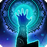
Jugement
 1 PA (Réaction)
1 PA (Réaction)
Lorsque le Héraut est touché ou effleuré par une attaque au corps à corps, il peut utiliser sa réaction pour tenter d'endormir de force la créature qui l'a touché. Cette créature doit réussir un jet de sauvegarde de Sagesse ou être endormie pendant 1 round.
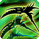
Voie du Faucheur
 Spécialisation
Spécialisation
Choisissez une Voie. Le Héraut gagnera des aptitudes supplémentaires de cette Voie au fur et à mesure de leur montée en niveau.
Moisson maudite
2 PA (Action)
Effectuez une attaque au corps à corps contre toutes les créatures hostiles à portée. Si le Héraut est en état d'Armure de miasme, les créatures touchées doivent réussir un jet de sauvegarde de Sagesse ou être maudites pendant 2 rounds.
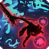
Lame noire
 1 PA (Action Combo)
1 PA (Action Combo)
Tant que l'état d'Armure de miasme est actif, le Héraut peut utiliser son action combo pour gagner 2 d’Offense lorsqu'il touche un ennemi affecté par une affliction avec une attaque ; ce bonus a un maximum de 10 et prend fin lorsque le combat se termine. Si plusieurs ennemis doivent être touchés par des attaques dans une seule action, comme avec une Moisson, le Héraut peut augmenter son Offense de 2 pour chaque cible touchée.
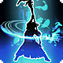
Expiation
2 PA (Action)
En tant qu'action, dissipez l'Armure de miasme pour cibler jusqu'à 4 créatures amicales et volontaires dans un rayon de 30 mètres. Ces créatures récupèrent 2d6 + modificateur d'Intelligence points de vie, et les effets de confusion, de cécité, de paralysie, de poison, de malédiction, de charme, de sommeil ou de pétrification disparaissent sur elles. Ce soin augmente à 4d6 + modificateur d'Intelligence au niveau 11 et 6d6 + modificateur d'Intelligence au niveau 16. L'Expiation peut être utilisée un nombre de fois par repos long égal au modificateur d'Intelligence du Héraut.
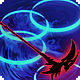
Clarté
 1 PA (Action Bonus)
1 PA (Action Bonus)
En tant qu'action bonus, le Héraut peut dissiper l'Armure de miasme pour ajouter un bonus de +2 aux jets d'attaque qu'il effectue jusqu'au début de son prochain tour.
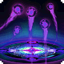
Miasme flétrissant
2 PA (Action)
En tant qu'action, choisissez un point dans un rayon de 12 mètres. Les créatures dans un rayon de 3 mètres de ce point font des jets de sauvegarde avec un malus de -3 contre les effets qui les rendraient empoisonnées, maudites, paralysées, confuses, charmées, pétrifiées, endormies ou aveugles pendant 3 rounds. Le Miasme flétrissant ne se cumule pas avec lui-même.
 Moisson toxique
2 PA (Action)
Moisson toxique
2 PA (Action)
Effectuez une attaque au corps à corps contre toutes les créatures hostiles à portée. Si le Héraut est en état d'Armure de miasme, les créatures touchées doivent réussir un jet de sauvegarde de Constitution ou subir 1d10 de dégâts de poison et être empoisonnées pour des dégâts supplémentaires de 1d10 chaque tour pendant 3 rounds.
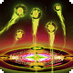
Miasme contraignant
2 PA (Action)
En tant qu'action, choisissez un point dans un rayon de 12 mètres. Les créatures dans un rayon de 3 mètres de ce point font des jets de sauvegarde avec un malus de -3 contre les effets qui les rendraient liées à la tête, aux jambes ou aux bras pendant 3 rounds. Elles reçoivent également un malus de -2 aux jets pour guérir de ces effets.
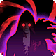
Rideau de miasme
 Passif
Passif
Expérimenté dans les déguisements fantaisistes, le Héraut est exceptionnel pour tromper les autres avec son apparence. Il peut même utiliser son miasme pour aider à produire un déguisement convaincant - tous les jets pour vous déguiser ou tromper quelqu'un avec un costume bénéficient d'un avantage.
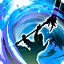
Moisson fatale
2 PA (Action)
Effectuez une attaque au corps à corps contre toutes les créatures hostiles à portée. Gagnez 5d8 d'Offense contre les cibles endormies.
Voile infini
1 PA (Action Combo)
Lorsque le Shogun réussit un jet de sauvegarde contre la mort, il peut compter cette réussite comme deux.
Armure endurante
Passif
Lorsque l'Armure de miasme serait dissipée par une action ou une action bonus, le Héraut peut fixer sa durée à 2 tours au lieu de cela. L'Armure endurante peut être activée un nombre de fois égal au modificateur de Sagesse du Héraut.
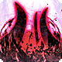
Torrent de miasme
2 PA (Action)
En tant qu'action, le Héraut libère un flot répressif d'obscurité. Jusqu'à la fin du prochain round, la durée de l'Armure de miasme du Héraut ne diminue pas et elle ne peut pas être dissipée, le Héraut inflige 5d12 de dégâts supplémentaires lors de sa prochaine attaque (du même type que l'attaque), et toutes les créatures hostiles dans un rayon de 6 mètres perdent 6 mètres de vitesse de déplacement. Le Torrent de Miasme peut être utilisé une fois par repos long.
 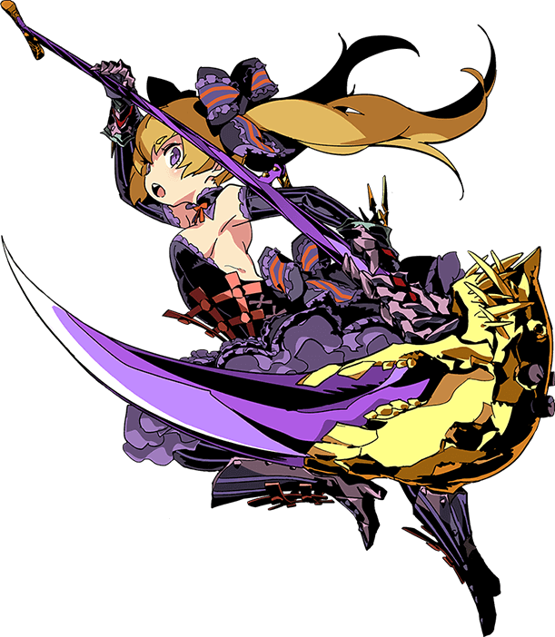
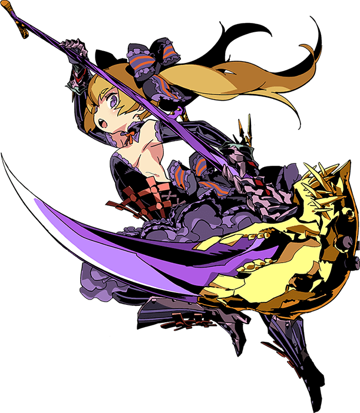
 Détails de la classe
Détails de la classe
 Points de vie : 1d8 + modificateur de Constitution par niveau de Héraut
Points de vie : 1d8 + modificateur de Constitution par niveau de Héraut Dés de vie : 1d8 par niveau de Héraut
Dés de vie : 1d8 par niveau de Héraut DD des jets de sauvegarde : 8 + bonus de maîtrise + modificateur d'Intelligence
DD des jets de sauvegarde : 8 + bonus de maîtrise + modificateur d'Intelligence Maîtrises : Faux, Épées, Couteaux de lancer ; Armures légères
Maîtrises : Faux, Épées, Couteaux de lancer ; Armures légères Jets de sauvegarde : Dextérité, Intelligence
Jets de sauvegarde : Dextérité, Intelligence Compétences : Choisissez 3 parmi Athlétisme, Acrobaties, Arcane, Tromperie, Perception, Investigation, Représentation, Escamotage, Survie et Discrétion
Compétences : Choisissez 3 parmi Athlétisme, Acrobaties, Arcane, Tromperie, Perception, Investigation, Représentation, Escamotage, Survie et Discrétion Équipement de départ : Une arme maîtrisée (ou deux si légères), une armure légère, 10 couteaux de lancer, un sac d'explorateur
Équipement de départ : Une arme maîtrisée (ou deux si légères), une armure légère, 10 couteaux de lancer, un sac d'explorateur 3 PA (Action Complexe)
3 PA (Action Complexe)